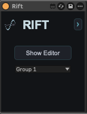
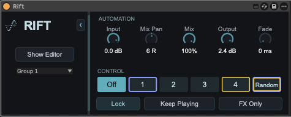
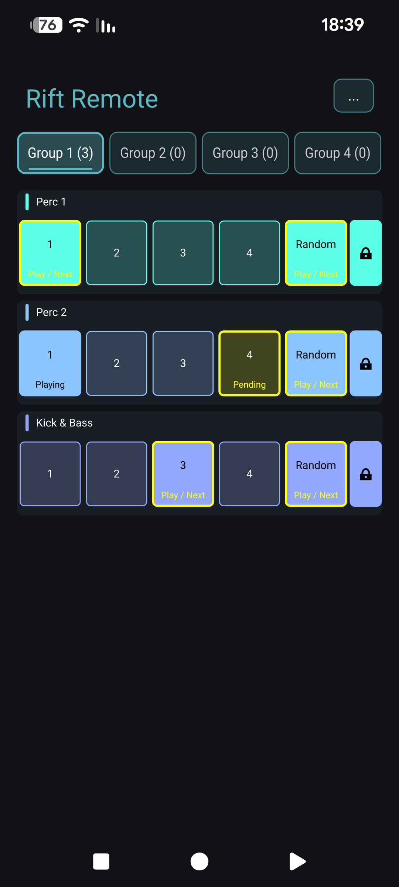

MAX FOR LIVE
Watch on YouTube ↗Multi-track glitch & FX performance.
See Rift's shared workspace in motion.
The YouTube player loads only when you press play.
Glitch & effects. Made to perform.
Slide between glitches. Transform your effects. Take a familiar loop somewhere completely unexpected.
$59USD · Rift license
Multi-track with Max for Live. Single-track with VST3, AU & AAX.
See it. Hear it.
Two ways to perform. Explore the shared Max for Live workspace and the independent plug-in.
See Rift's shared workspace in motion.
The YouTube player loads only when you press play.
Explore Rift directly in your DAW. No Max device required.
The YouTube player loads only when you press play.
01 / The workflow
Connect your Live set, or focus on a single track. Choose the way you want to play.
Add the Max device to your Ableton Live tracks and bring them into one shared editor. Names and colors follow your set. Four independent groups keep their performances separate.


Requires Ableton Live with Max for Live. The included Max device hosts Rift for the shared multi-track workflow.
Load Rift directly in your compatible DAW. Each instance has its own single-track workspace, with the same glitch controls, effect snapshots and preset formats. No Max device required.
Same license. Same presets. Independent plug-in instances.
02 / Shape the unexpected
Build a chain of up to four effects, then give it eight different snapshots. Assign a snapshot to each performance control, or let Random find the next turn.
Set beat, length, pitch, glide, reverse probability, pan and gain for each control. Shape the gesture before you make it.
Repeat captured audio in Glitch mode. Switch to FX Only to keep your incoming audio moving through timed effects and pan.
Use random pitch, beat, reverse and effect snapshots to discover variations. Latch a performance when you find your moment.
03 / Rift Remote for Android
Take the performance pads off your computer. Rift Remote brings your multi-track workspace to your Android phone over your local network.
Find an available Rift remote server on your network, without typing an IP address.
Track names, colors, order and groups follow the plug-in. Playing and pending states stay visible.
Move across the touch pads, try Random, and latch the moments you want to keep.
For the Max for Live multi-track workflow. Computer and phone must be on the same trusted local network. Not required for using Rift.

04 / Built around your session
Save a full track, just its controls, or its effect chain. Copy settings between tracks without replacing their Live names and colors.
Adjust fade and offset, balance input and output, and add motion with the pan LFO. Tune the performance to your material.
Automate your performance controls and track parameters. In Max for Live, access them directly from the expanded device.
Rift / Version 1.1.0
Downloads, licensing & setup information.